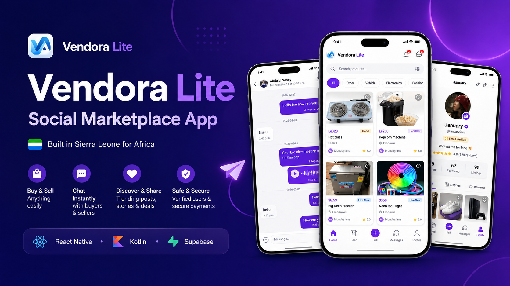
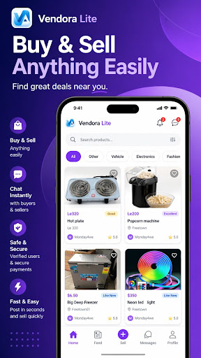
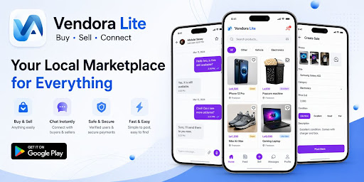
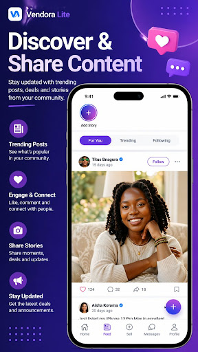
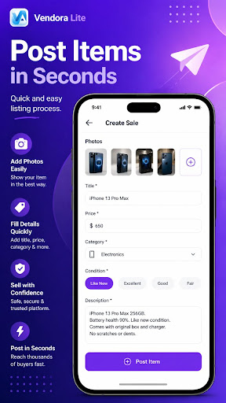
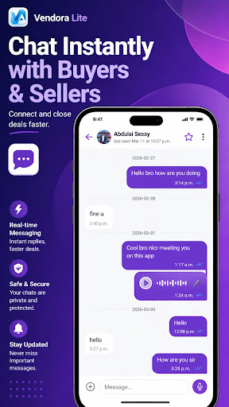

The problem
Many local sellers rely on scattered social posts and private messages. Buyers often struggle to discover trustworthy products, compare options or contact sellers quickly.
A social marketplace built in Sierra Leone for Africa.
Vendora Lite helps people discover products, create listings, connect with buyers and sellers, and participate in a growing digital marketplace community.

Vendora Lite combines marketplace listings, real-time communication and social discovery in one mobile experience.
Many local sellers rely on scattered social posts and private messages. Buyers often struggle to discover trustworthy products, compare options or contact sellers quickly.
A focused marketplace where users can browse, list, save, share and communicate directly.
Founder and lead developer responsible for product strategy, interface design, mobile engineering and release management.
Create listings with photos, pricing, category, condition and location.
Help users find relevant products from their country and nearby market.
Connect buyers and sellers directly with instant messaging.
Send voice notes and use built-in voice calling.
Share posts, updates, stories and product activity with the community.
Profiles, verification indicators, reports and blocking improve confidence.
Bookmark useful listings and return to them later.
Manage active listings, visibility and business presence in one place.
Built responsive chat flows with presence, typing states, media and read-status behavior.
Messages can remain queued locally and send safely when connectivity returns.
Integrated Kotlin components for incoming call behavior, notifications and background reliability.
Improved caching, loading states and feed behavior for a faster product discovery experience.





I created Vendora Lite to make digital buying, selling and business discovery more accessible, starting from Sierra Leone and growing toward a broader African marketplace.